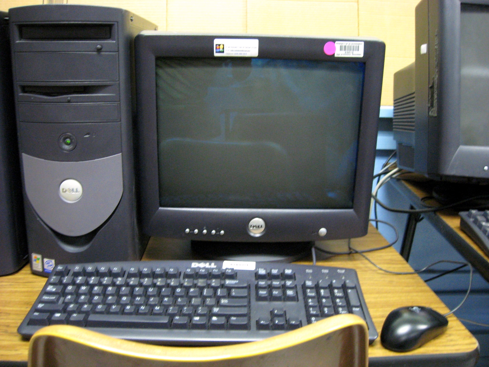

Computer

- Computer:
- computer, device for processing, storing, and displaying information.
Computer once meant a person who did computations, but now the term almost universally refers to automated electronic machinery. The first section of this article focuses on modern digital electronic computers and their design, constituent parts, and applications. The second section covers the history of computing. For details on computer architecture, software, and theory, see computer science.
Read more abbout computer in: https://www.britannica.com/technology/computer